GSK设备管理系统（用户手册）
概述安装电脑配置软件安装准备工作安装说明软件注册运行CNC配置支持版本GSK980TDi配置GSK988TA配置网络连通测试管理系统软件说明管理系统功能列表设备看板功能列表页面说用说明设置页面添加设备成品输出删除编辑保存设备总览机床监控程序文件刀偏设置看板
使用本系统能实现对GSK设备的状态监控，通过下文你将了解到如何使用本系统。
| 项目 | 最低配置 |
|---|---|
| 操作系统 | windows 7 |
| CPU | 2GHz |
| 内存 | 4GB |
举例：192.168.11.19
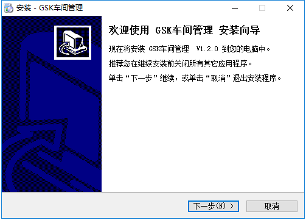
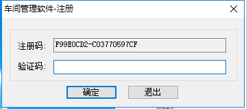
| CNC型号 | 最低版本 | 配置 |
|---|---|---|
| GSK988TA | V1.68 | （见下文GSK988TA配置） |
| GSK988TD | V2.01 | |
| GSK980TDi | V6.20h | （见下文GSK980TDi配置） |
| GSK980MDi | ||
| GSK980TC3 | ||
| GSK25i |
操作步骤：
切换页面确认版本号；
切换到“参数->状态参数”页面；
切换到IP页面记下IP地址。
操作步骤：
切换页面确认版本号；
切换到“设置->CNC设置->系统IP”页面；
IP地址：192.168.11.111子网掩码：255.255.255.0默认网关：192.168.11.254
xxxxxxxxxx（序号任意） 192.168.11.19 读写
切换到“系统->参数”页面；
使用电脑进行以下操作：
Ctrl+r cmd 回车
ping <设备IP>
网络连通正常：
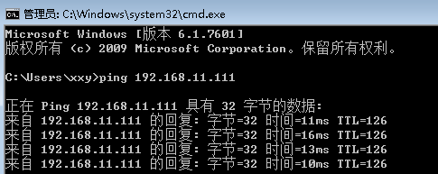
网络连通异常：
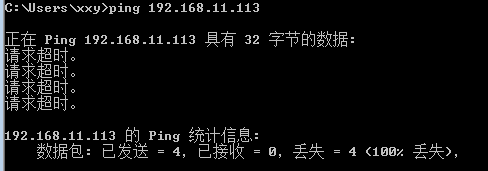
| 显示内容 | 说明 |
|---|---|
| 设备状态 | 关机（灰）、待机（黄）、加工（绿）、报警（红） |
| 设备名称 | 车床1，车床2，切削1、机器人1、机器人2等别名，由用户配置 |
| 设备型号 | 例如GSK988TA，由用户配置 |
| 设备编号 | 例如L05CUM00822TA1H，由用户配置 |
| 关机时间 | 当天0点开始的关机时间统计 |
| 待机时间 | 当天0点开始待机时间统计 |
| 报警时间 | 当天0点开始报警时间统计 |
| 加工时间 | 当天0点开始加工时间统计 |
| 已加工件数 | 当天0点开始加工件数统计 |
| 程序文件 | 对程序文件的上传和下载 |
| 刀偏设置 | 读取和修改刀偏数据 |
| 报警历史 | 显示每条报警的序号、内容和时间 |
| 绝对坐标 | |
| 进给倍率 | |
| 手动倍率 | |
| 快速倍率 | |
| 手轮倍率 |
| 显示内容 | 说明 |
|---|---|
| 设备状态 | 关机（灰）、待机（黄）、加工（绿）、报警（红） |
| 每台设备加工件数 | 当天0点开始每台设备加工件数 |
| 总加工件数 | 当天0点开始所有设备加工件数 |
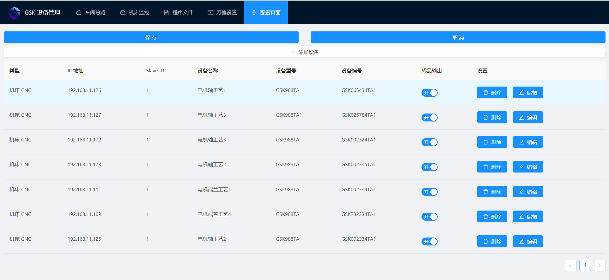
点击“添加”按钮后出现：
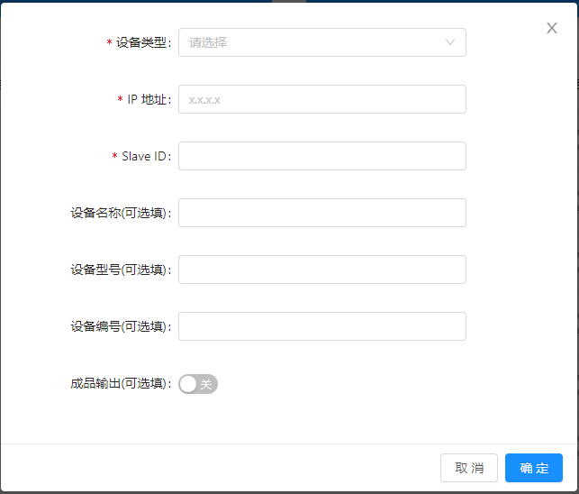
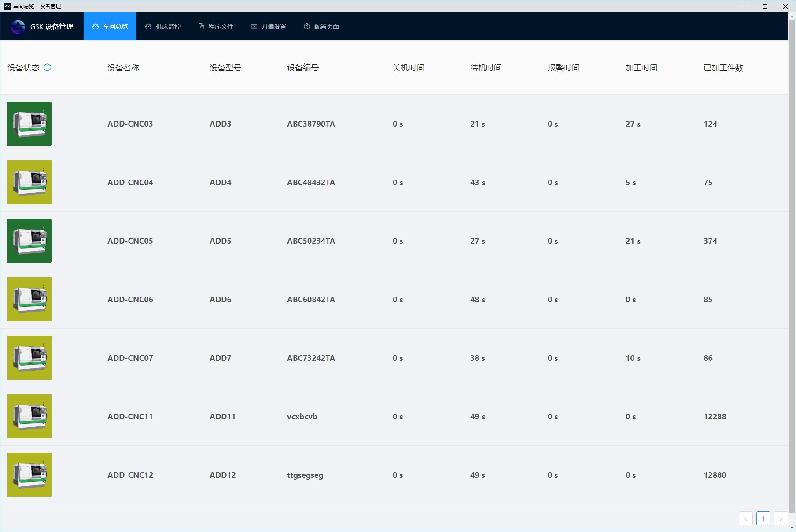
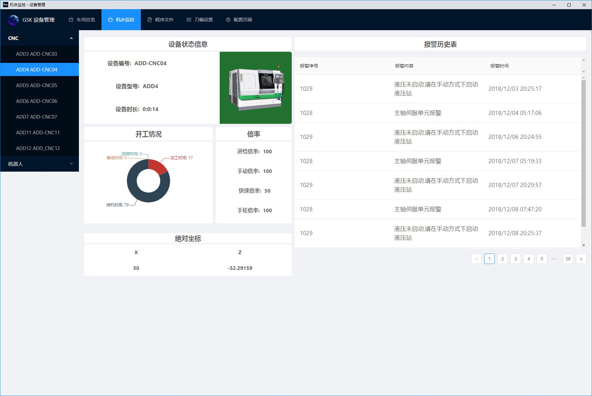
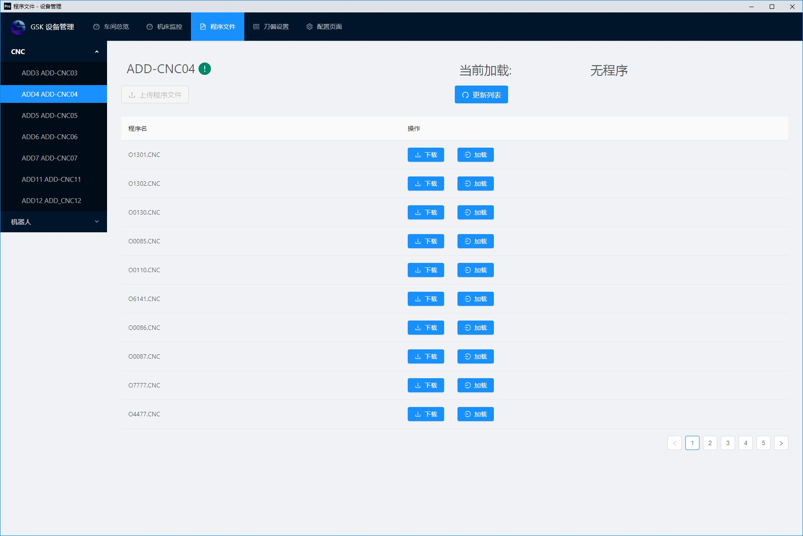
程序上传、下载以及加载。
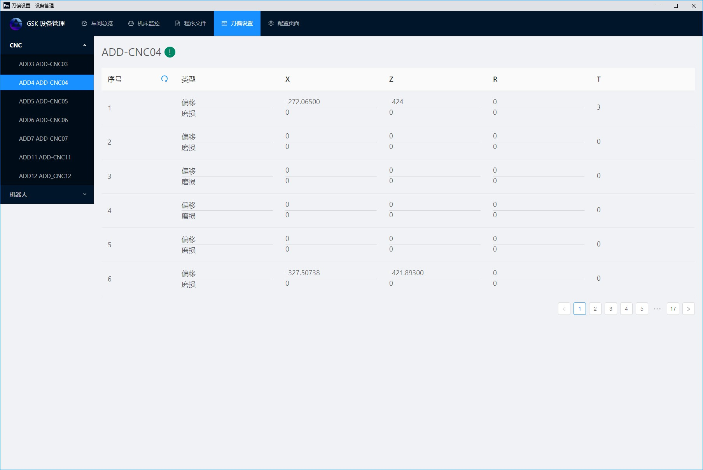
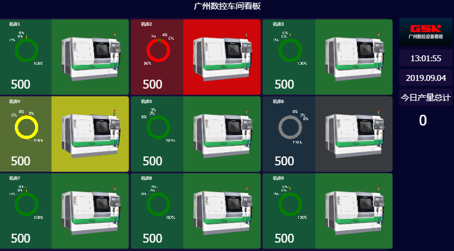